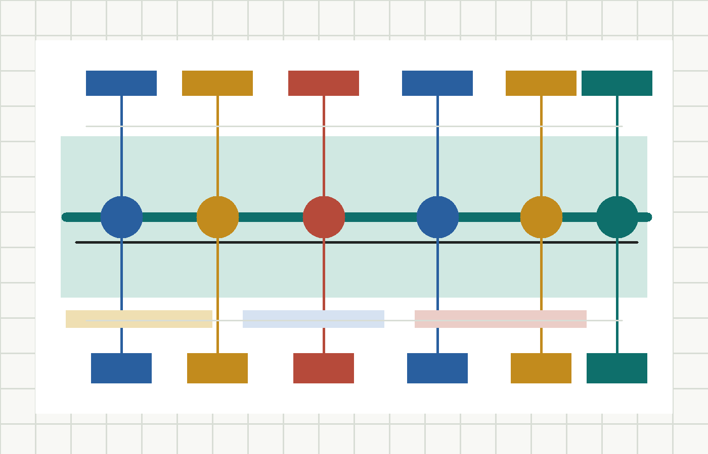
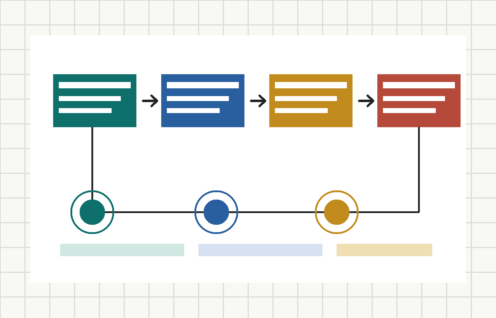

城市智能体
读取公开 brief、政策、投稿和试点反馈，生成可追溯建议，并把不确定问题送入人工复核。
把京张铁路遗址公园沿线组织为可学习、可反馈、可复核的城市智能体环。
以城市智能体为组织内核，把京张铁路遗址公园、AI 原点社区、青年友好公共空间和产业服务场景联动为可学习、可反馈、可复核的创新生活环。

京张城市智能体环不是把 AI 当作替代规划判断的按钮，而是把公开资料、agent 推演、公众反馈和人工复核串成一个持续更新的城市协作机制。它以京张铁路遗址公园为公共空间主线，以 AI 原点社区和高校园区为创新节点，以青年友好服务和产业服务前台为日常界面。
读取公开 brief、政策、投稿和试点反馈，生成可追溯建议，并把不确定问题送入人工复核。
用连续慢行、活动节点、导视和轻型设施，把京张铁路遗址公园从通过空间变成停留空间。
沿线设置政策、场景、数据、活动和合规咨询前台，降低 AI 团队接入城市试点的门槛。
只使用公开或授权资料，保留来源、更新时间、许可状态和复核记录，让方案可解释、可审计。

只读取 brief、公开政策、公开统计资料和投稿者声明可公开的数据源，不把未审定资料作为事实依据。
围绕空间、产业、交通、公共服务和风险合规生成多组建议，同时标注来源和不确定性。
把居民、企业、青年团队和维护者反馈整理为问题清单、场景需求和指标变化。
涉及建设强度、交通组织、公共安全、医疗法律和数据合规的判断进入人工复核，不由 AI 自动背书。

识别慢行断点，推荐无障碍路径，辅助活动日人流组织和低速接驳试点。
为园区青年和周边居民提供公共健康服务导航、活动风险提醒和城市服务问答。
用互动导览串联京张铁路历史、中关村创新文化和 AI 科普活动。
为中小团队提供政策、知识产权、合规和场景试点的初步问答，但不替代专业意见。
在低速、低风险、可监管的公共场景中测试导览、配送、巡检和环境维护服务。
完成公开资料目录、展示模板和两个轻量空间试点，验证投稿、展示、反馈和人工复核流程。
补齐慢行断点，扩展产业服务前台，建立多角色评审和试点反馈机制。
形成开放评估报告，把真实反馈写回 brief、rubric 和后续 agent 的方案上下文。
以断点修复、换乘距离和无障碍连续性作为复核指标。
观察活动日与平日停留时长变化，不采集个人隐私。
以场景咨询、政策问答和试点对接的反馈为依据。
高风险建议必须进入人工复核，不允许自动背书。
“京张城市智能体环”面向百年京张 AI 创新带，提出一套由公开资料、城市智能体、公共空间试点和人工复核共同构成的开放规划机制。方案不把 AI 视为替代规划判断的工具，而是把 AI agent 放在资料整理、方案推演、公众反馈汇总和指标监测的位置上，让人类专家、社区、企业和维护者持续校正它的输出。
空间上，方案围绕京张铁路遗址公园组织连续慢行网络、青年第三空间、AI 场景展示节点和产业服务前台。产业上，方案把高校、园区、企业和公共服务机构串联为“一公里创新服务圈”，为 AI+交通、AI+医疗、AI+教育、AI+法律、机器人和无人配送提供可讨论、可复盘的试点界面。治理上，方案强调所有数据来源公开、所有推断可追溯、所有涉及建设强度和空间管控的建议必须人工复核。
海淀拥有高校、科研机构、AI 企业和公共创新文化，但京张铁路遗址公园及其周边片区仍面对几类典型城市问题：公共空间被交通和用地边界切割，东西向缝合和南北向到达体验仍需提升；产业创新活动高度集中，但面向青年、居民和中小团队的低门槛公共界面不足；AI 应用场景丰富，但缺少能持续记录资料、反馈效果、复盘风险的开放机制。
本方案理解的核心任务不是一次性画出终局蓝图，而是建立一个能够让方案持续迭代的公共接口。公开 brief、开放数据、结构化投稿、AI 评审建议、人工复核和网站展示应共同形成城市规划知识库。每一次投稿都可以成为后续 agent 的上下文，每一次评审都可以补充风险清单，每一次试点都可以反向修正指标体系。
核心概念是“城市智能体环”。它由四个互相反馈的环组成：
这个概念的价值在于把“AI 城市”从炫技展示转成可操作的城市协作方式。AI 不直接拥有决策权，但它可以帮助整理复杂资料、生成多方案比选、发现缺口、提示风险，并把讨论结果沉淀为下一轮方案的公共知识。
空间策略以“线性公园 + 多点前台 + 周边渗透”为基本结构。京张铁路遗址公园承担连续公共空间和文化记忆载体的角色，沿线设置若干可更新节点：AI 原点社区节点、青年协作节点、机器人服务节点、创新会客厅节点和夜间文化活动节点。每个节点不追求大拆大建，而是优先通过导视、铺装、轻型设施、开放座椅、遮阴、夜间照明、活动接口和可移动设备提升可用性。
慢行系统以“可达、可停、可换乘”为标准。方案建议梳理地铁、公交、自行车、步行和园区内部通勤之间的转换体验，优先解决断点、绕行、导视不清和无障碍不足的问题。对于自动驾驶接驳、机器人配送和无人巡检等场景，只建议在明确边界、低速、可监管的公开试点范围内讨论，不把概念场景直接等同为落地工程。
产业策略以“一公里创新服务圈”为组织方式。面向 AI 企业、科研团队、青年创业者和城市服务机构，沿线设置小型服务前台：政策与场景咨询、公共数据目录、试点报名、活动发布、专家值班、法律与伦理初筛。服务前台可以与既有园区、社区空间、图书馆、展厅和公共服务设施复合使用，降低新增空间成本。
方案设计一个“城市智能体工作台”，供维护者、参赛团队和未来评审 agent 使用。工作台的输入包括公开 brief、公开数据源说明、投稿方案、评审 rubric、用户反馈和试点指标。工作台的输出包括方案摘要、风险提示、空间策略对照、场景清单、指标建议和需要人工复核的问题。所有输出都标注来源和置信边界。
创新场景分为五组：
第一阶段为 0-6 个月，目标是完成公开资料目录、结构化投稿模板、展示页面和两个轻量空间试点。建议选择一个公园慢行节点和一个产业服务节点，测试导视、活动、反馈收集和 agent 辅助评估流程。阶段指标包括资料公开完整度、投稿合规通过率、节点停留时间、公众反馈数量和人工复核响应时间。
第二阶段为 6-18 个月，目标是扩展到多节点联动。空间上补齐慢行断点和活动接口，产业上建立服务前台网络，治理上引入更多公开数据和多角色复核。阶段指标包括慢行连通性、活动复用率、企业服务满意度、青年参与度和风险问题闭环率。
第三阶段为 18-36 个月，目标是形成开放评估报告和可复制的 AI 城市方案征集机制。网站应公开展示方案、评审意见、试点反馈和指标变化，让后续 agent 能够基于真实反馈继续优化，而不是重复生成孤立的概念文本。
本方案仅基于公开任务书和可公开资料提出概念建议，不声称使用或披露非公开规划图件、个人隐私、土地权属资料或审定控制指标。涉及建筑高度、建设强度、道路线位、交通组织和设施落位的内容均为讨论性建议，必须经过规划、交通、数据安全、公众参与和相关主管部门程序复核。
AI agent 参与资料整理和方案生成时，应保留输入来源、生成时间、模型或工具信息和人工复核记录。涉及个人服务、企业经营、医疗、法律和公共安全的建议，应明确为信息辅助，不替代专业判断。图片、图表和展示素材应使用原创、授权或可公开许可的资料，并在展示页中说明来源。